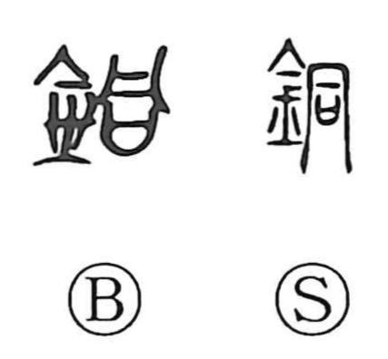

銅

Kun: akagane | On: do
copper
Explanation
A phono-semantic character: the metal sign 金 supplies the meaning, while 同 acts as the phonetic, yielding the On reading do. The Shuowen glosses it as “red metal,” that is, copper. In bronze inscriptions from the early Zhou period, the word is at times written simply with 金, reflecting copper’s role as the basic material for casting bronze vessels. Copper was obtained across China, with particularly fine ore from the south celebrated as “southern metal” (南金).